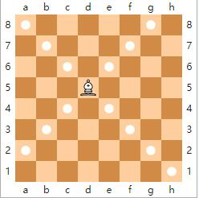

一次棋谱的记录，一行若干个字符。其中每一个回合用"x. s1 s2 "记录，x表示回合数，s1表示白棋的移动，s2表示黑棋的移动。保证所有棋谱不超过300个回合。
 Comet OJ
Comet OJ
xs和xxs在学习走国际象棋，为了提升自己的实力，他们开始学习记棋谱。但由于他们两人是初学者，在走棋和记录上面还有很多问题。
国际象棋规则（会下的可以略过不看）：https://en.wikipedia.org/wiki/Chess国际象棋的棋盘为8*8正方形。棋子的初始摆法如图所示：
走法:
王: 王是整个棋局中最为重要的棋子，它是不能被吃的。 走法是横、直、斜走均可，但每次只能走一格。吃子与走法相同。 另外，所走到的位置不可有对方棋子的威胁，否则会被视为"违规移动"。 另外有一种特殊的走法，称作"王车易位"。
后: 走法是横、直、斜走均可，格数不限，但不可越过其他棋子。吃子和走法相同。
车：又称"城堡"，车的走法是横走或直走，格数不限，但不可斜走，也不可越过其他棋子。吃子与走法相同。

象：又称"主教"，象只可斜走，格数不限，但不可转向，也不可越过其他棋子。吃子与走法相同。
马：又称"骑士"，马的走法和中国象棋相同，同样是走"日"字，或英文字母大写的"L"形： 即先向左（或右）走1格，再向上（或下）走2格；或先向左（或右）走2格，再向上（或下）走1格。 不同的是，国际象棋的马没有"绊马脚"的限制，故马可越过其他棋子。吃子与走法相同。
兵: 兵的走法是，第一步向前可走一格或两格，以后每次只能向前走一格，不可向后走，或越过其他棋子。 但吃对方棋子时，则是向位于斜前方的那格去吃。 另有一种特殊走法"吃过路兵"。
三个特殊规则：
兵的升变： 当己方的兵走到对方的底线（即最远离己方的一行）时，玩家可选择把该兵升级为车、马、象或后，但不能变王，也不能选择不变。
吃过路兵：
当一方的兵从原始位置向前一步走两格时，如果所到格的同一横线的相邻格有对方的兵时，则后者可以立即吃掉相邻的前者，但是占据原来位置的斜前方那一格，而不是前者原来占据的那格。 但"吃过路兵"的一方必须在对方走棋后的下一步立刻吃，否则就会失去该"吃过路兵"的机会。
王车易位： 把王向车的方向打横移动两格，再把车直接移到王的另一侧，放在王的相邻一格。 如果王与车之间有2格的称为"王翼易位"，俗称"短易位"；王与车之间有3格的称为"后翼易位"，俗称"长易位"。 使用王车易位的前提： 王和参与易位的车未被移动过。 如果发生以下情况之一，则暂时不能王车易位： (1)当王被将军时。 (2)王和参与易位的车之间有棋子。 (3)王所在的格，或易位时王将要经过的格，或易位后王将占据的格，正在受到对方一个或数个棋子的进攻。
代数记谱法（Algebraic_notation）：https://en.wikipedia.org/wiki/Algebraic_notation_(chess))1、棋盘上各自的命名方法： 棋盘的每一个格子由一个坐标来表示。横向的一排方格称为一"行"，纵向的一排方格称为一"列"。
为了便于记录棋谱，棋盘上离白方最近的那一行定为1，最远的那一行定为8。
位于白方最左边的那一列定为a，最右边的那一列定为h。 这样，白方左下角的第1格的坐标就是a1，白方王所在的原始位置就是e1，黑方后所在的原始位置就是d8。2、棋子的命名法 每一个棋子，都分配了一个大写字母用作标识。 K（King）代表"王"，Q（Queen）代表"皇后"，R（Rook）代表"城堡"，B（Bishop）代表"主教"，N（Knight）代表"骑士"，"兵"并不指派字母。3、移动的记录 （1）一般情况下，每一步的移动用一个代表棋子的大写字母，加上它所去的格子表示这一步。例如Be5表示将象移动到e5格，c5表示将兵移动到c5格。 （2）吃子：当一个子（不是兵）吃子时，在大写字母和它所去的格子的中间添加一个x表示吃了子，如Bxe5表示将象移动到e5格并吃了子。 当兵吃子时，用兵所在的列来区分是哪个兵吃的子，例如dxc5表示在d线上的兵吃了c5上的一个子。 吃过路兵：吃过路兵和用兵吃子的记录方法类似。例如，黑棋上一步将c7的兵走到c5，白棋用dxc6记录用d5的兵吃过路兵。 （3）多个同类棋子能到同一格, 移动的棋子用与其他棋子来源格不同的行或列表示。若列不同则用列区分，若行不同则用行区分（列优先）。 例如，若有马在g1和d2格，Ngf3和Ndf3是合理的记录，而N1f3则不是。若有马在g1和g3格，则要用N1d2或N3d2记录。 可能会出现仅用行列都不能区分的时候，此时需要同时用行和列表示，这表示有三个以上的棋子能到同一格，在本题中不考虑这种情况。 （4）升变：当一个兵走到最后一行并升变时，在它走到个格子后面加上它升变成的棋子符号，例如e8Q, dxc1R。 （5）易位：王翼易位用O-O表示，后翼易位用O-O-O表示。 （6）将军：如果走完这步棋对方王被将军，则在这步移动后加一个+号表示。双将仍用一个+号表示。 本题不用检验当前局面是否已被将杀。
介于nxs和xxs都是初学者，他们在记录中可能存在以下问题： 1、不符合规则的移动（没有棋子能完成这次移动，移动之后王被将军，不能王车易位是进行易位等等） 2、在多个棋子能走到同一格时，用来记录区分棋子的方式错误或没有记录（题目保证没有三个同样的棋子能够移动到同一格） 3、在吃子的时候未记录x或记录错误 4、在将军的时候未记录+或记录错误 5、升变没有记录升变成的棋子 6、为了简化问题，不用判断当前局面是否将杀，只需记录是否被将军（+）即可 7、输入保证所有的记录都是在所有局面下可能存在的移动，不会记录的将棋子移动到棋盘外或是其他没有意义的字符串。
一次棋谱的记录，一行若干个字符。其中每一个回合用"x. s1 s2 "记录，x表示回合数，s1表示白棋的移动，s2表示黑棋的移动。保证所有棋谱不超过300个回合。
输出一行,Yes或者No表示棋谱是否合法。
1. e4 d5 2. exd5 c5 3. dxc6 b6 4. d4 Be6 5. Be3 Nd7 6. Qd2 Qc7 7. Nc3 O-O-O 8. O-O-O Re8 9. cxd7+ Kb8 10. dxe8Q+ Qc8 11. Bf4+ Ka8 12. Nb5 Bd7 13. Qc3 e5 14. Qcxc8+ Bxc8 15. Qxc8+Yes